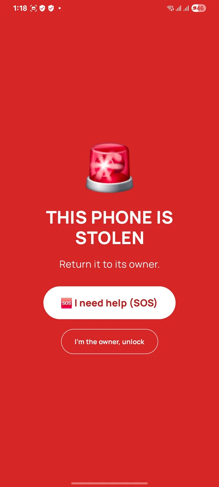
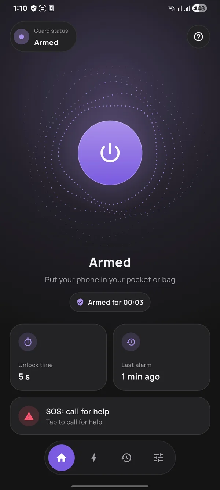
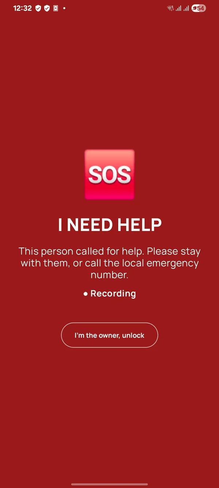
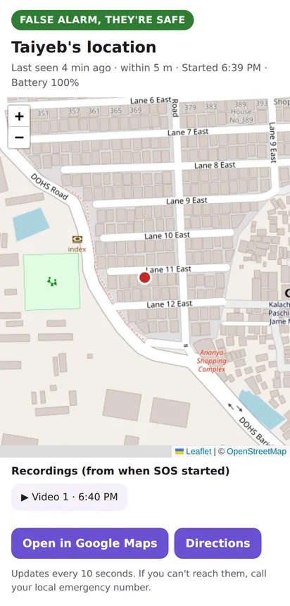
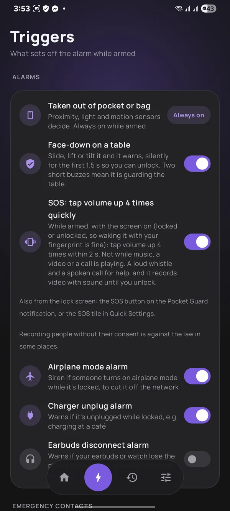
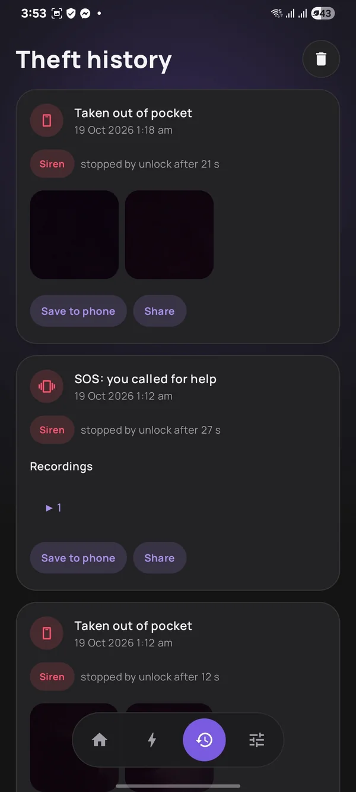

Free Android app · No ads · No sign-up
A loud friend in your pocket.
Once armed, Pocket Guard warns the moment someone takes your phone, then sounds a siren. And while it's armed, four taps on volume up tell your people where you are.


- Free no ads, no in-app purchases
- Works offline the alarm needs no internet
- English & বাংলা in the app
- Private no sign-up, no tracking
How it works
Three things to know.
-
Arm it before the crowd
Tap the big round button before the bus, the bazaar or the walk home. Lock your phone and put it away. A short buzz (two on a table) means it's watching.
-
Taken? It shouts
Pulled from your bag or pocket, or picked up off a table, it warns, then sounds a full-volume siren. It stops when you unlock your phone (or, on a table, if it's put straight back down).
-
In trouble? Tap four times
With it armed, wake the screen and tap volume up four times within two seconds. It calls out for help, records video, and texts the contacts you approved where you are. Taps don't count while music, a video or a call is playing.
See it in under a minute
Two everyday situations: a pickpocket on a packed bus, and someone being harassed in a crowd. See what Pocket Guard does in each.
Sound on for the siren. The video is about 4 MB and only loads when you tap play.
SOS
Four taps, and your people know.
The bus is packed and someone keeps pressing closer. You don't want to unlock your phone, find an app and type. Pocket Guard is armed, so you reach into your bag, wake the screen and tap volume up four times. By feel. Nobody sees you do it.
-
Right away, it gets loud
A shrill whistle and a voice shouting “Help! Stop it! Help!” at full volume, even on silent (in Bangla if the app is in Bangla and your phone has a Bangla voice). With camera and microphone allowed, the back camera records video with sound, up to 15 minutes.
-
Five seconds to change your mind
Tapped by mistake? Tap Cancel alerts within 5 seconds and nobody is alerted. The alarm keeps sounding until you unlock.
-
Then your contacts hear from you
Up to five people you choose get an SMS with your location (or, if the phone hasn't found it yet, a follow-up as soon as it does). With the live link on, it links to a map that follows you and plays the recording in one-minute clips, and anyone with an email address gets it by email too.
-
Unlock when you're safe
Everything stops. If the phone was already unlocked when SOS started, tap I'm the owner instead. Stop within about 15 seconds of the alert going out and they're told it was a false alarm.
Already sounding? If you grabbed your own armed phone and the theft alarm went off, tap 🆘 I need help on its screen, or the same four taps. It turns into an SOS, no unlock needed.
While it's armed, SOS is also on the notification, a Quick Settings tile and the app's Home screen. The volume taps need one Accessibility switch, which the app helps you turn on.
Sadia needs help! SOS from Pocket Guard at 6:05 PM. Location: https://maps.google.com/?q=23.810331,90.412521 (within 10 m)
Live location: https://pocket-guard.pages.dev/live/#t=…


Theft alarm
Taken from your bag? It won't go quietly.
Rush hour at Farmgate. Someone's hand slides into your bag, and your phone is gone. But the moment it leaves your bag or pocket, Pocket Guard knows nobody unlocked it.
-
Quiet for you, loud for them
Take your own phone out gently and you have about two seconds of silence to unlock it. A yank or bright light beeps at once (in your earbuds, if they're connected). Then it beeps until the siren starts.
-
A siren they can't silence
Full volume even in silent mode, and turning the volume down doesn't work. The torch flashes and “THIS PHONE IS STOLEN” fills the lock screen.
-
Photos of who's holding it
When the siren starts, the front camera silently takes two photos (with camera allowed), kept in History (for 90 days) for when you get it back.
-
A restart won't stop it
Restarted during an alarm, the siren comes back as soon as the phone starts up, even before anyone unlocks it.
-
On the table, too
Lay it down at a café or tea stall. A slide, a lift or a tilt warns, while a bump or a cup set down doesn't.


And a few quieter helpers
- ScheduleArms itself at set times, like a Focus mode schedule: every day 09:00–18:00, or Friday nights. Each time it arms itself, tap its notification to open the app once, so photos, SOS video and location work.
- Airplane modeArmed and locked, turning on airplane mode starts the siren at once.
- Charger unpluggedCharging in a waiting room? Armed and locked, pulling the charging cable warns.
- Earbuds disconnectOptional: while armed and locked, if your earbuds or watch lose the phone when it isn't in your pocket or on a table, it warns, then sounds the siren.
- HistoryYour last 90 days of alarms with their photos, and your SOS videos to play, save or share.
Privacy
Nothing leaves your phone except what SOS needs.
- No ads, no analytics. Nothing tracks what you do in the app.
- No sign-up. No email, no password. For the live link, the app makes an anonymous ID for this phone, which you can delete in Settings.
- Your photos stay yours. Intruder photos are never uploaded. Photos and recordings stay in the app's private storage, out of your gallery, for 90 days unless you save or share them. With the live link on, SOS videos are also shared with your approved contacts.
- SOS goes only to your people. With the live link on, your name, location, battery level and video go through Pocket Guard's server to a private link (and contacts' email addresses go to our email provider to send the alert), sent only to the contacts you approved (anyone they forward it to can see it too). The link stops working a day after SOS ends, and the server deletes your SOS data after 90 days, or at once from Settings. Prefer SMS only? Switch the live link off.
Install
Installing from outside the Play Store
Pocket Guard isn't on Google Play yet, so you install it straight from this site. It takes a minute.
- Tap Download on your phone. If Chrome asks whether to keep the file, tap Download anyway.
- Open the downloaded file. If Android says your browser isn't allowed to install apps, tap Settings, turn on Allow from this source and go back.
- Tap Install, then open Pocket Guard. Get it ready walks you through the few switches Android keeps off, one tap each.
FAQ
Questions
Is it really free?
Yes. No price, no ads, no in-app purchases and no sign-up. SOS texts go from your own number at your normal SMS rate.
Which phones does it work on?
Android 8.0 and newer, with a screen lock (PIN, pattern or password). Pocket detection needs a proximity sensor, which almost every phone has. Some phones only report it while the screen is on: Sensor check in Settings shows what yours does, or tells you to try it in your pocket. SOS location needs Google Play services. iPhone isn't possible: iOS doesn't let apps read sensors in the background.
Does it work without internet?
The theft alarm, siren, photos and SOS recording all work with no internet at all. The SOS text message needs only mobile signal, and if there's none, the app keeps trying for about two minutes, then offers your messages app. The live map link and the email need mobile data or Wi-Fi.
What do my emergency contacts get?
An SMS like “Sadia needs help! SOS from Pocket Guard at 6:05 PM. Location: …”, sent from your own number, in English or Banglish (your choice). With the live link on, it also carries a link to a map that follows you and plays the video, and contacts with an email address get it by email too. If you move 200 m or more, an update follows, at most every 5 minutes (up to 3). You see and approve the exact messages when you add your contacts.
Can a thief just switch the phone off?
No app can block the power button. But if the phone is restarted during an alarm, the siren comes back as soon as it starts up, before anyone can unlock it. Many phones also have a “password to power off” setting: turn it on.
Will it go off when I take out my own phone?
Not if you unlock it. Take it out gently and you have about two seconds of silence to unlock (a yank or bright light beeps straight away). Then it beeps until the siren starts: 5 seconds in all by default (you choose 0 to 15; at 0 the siren starts at once). If you'll be taking it out a lot, leave it off, or set a schedule so it's only armed when you need it.